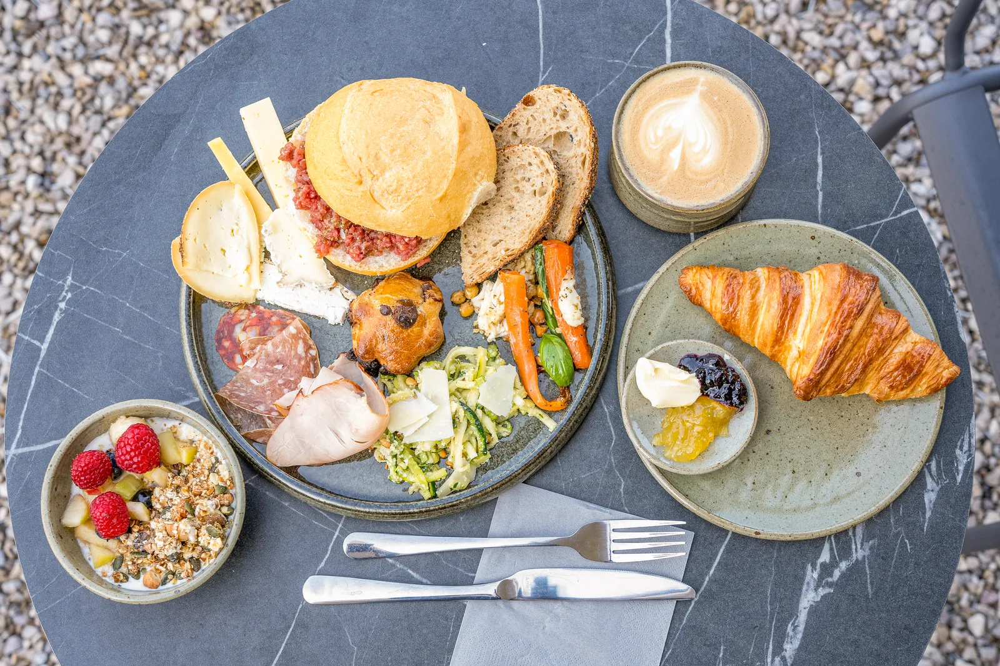
Ontbijt en brunch
Ontbijten en brunchen kan bij ons elke dag. Liever een uitgebreide formule of à la carte? Alles kan, en kinderen zijn meer dan welkom.
- Formule of à la carte
- Verse sapjes
- Huisgemaakt gebak
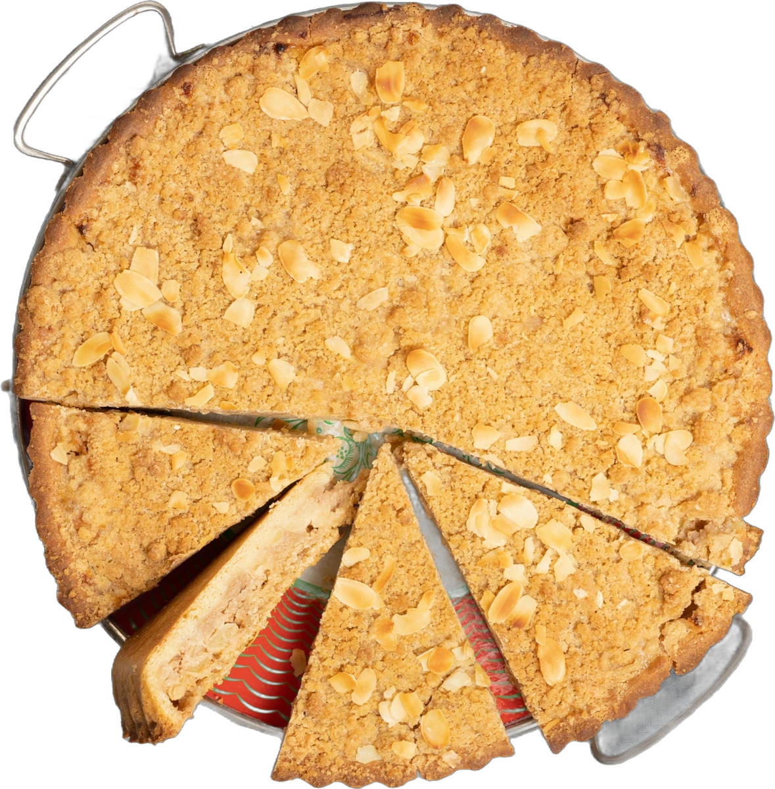
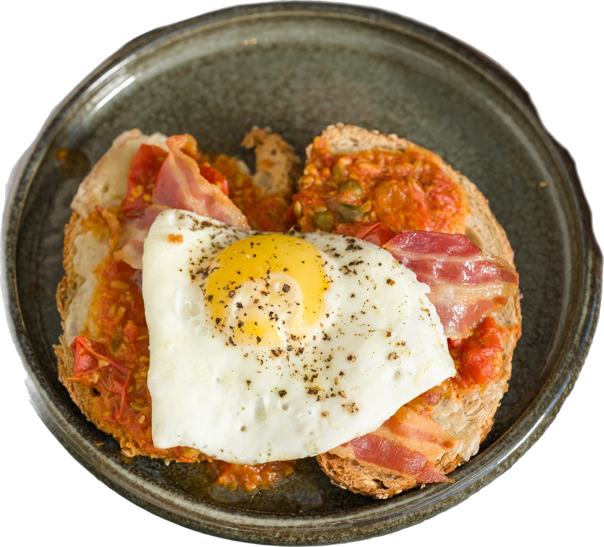
Alles uit ons eigen atelier, dagvers en huisgemaakt. Kom voor een stuk taart, schuif aan voor brunch of neem een hele taart mee naar huis.
Elke dag staat er een zalig assortiment klaar, uit ons eigen atelier. Kan je niet kiezen? Neem de verwenkoffie, met drie verschillende stukjes taart.
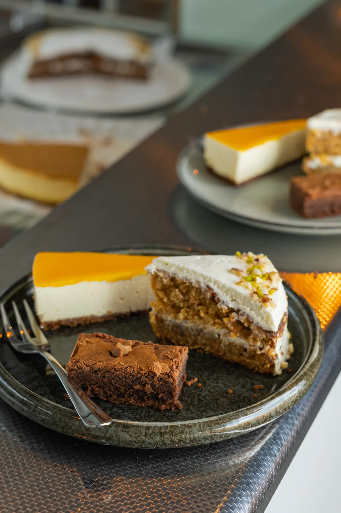
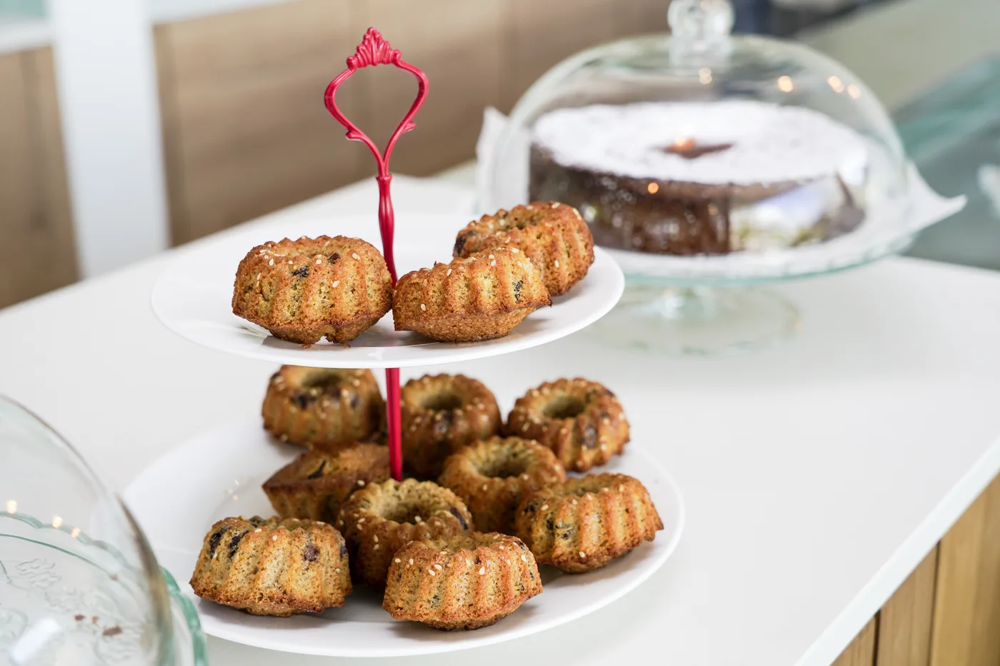
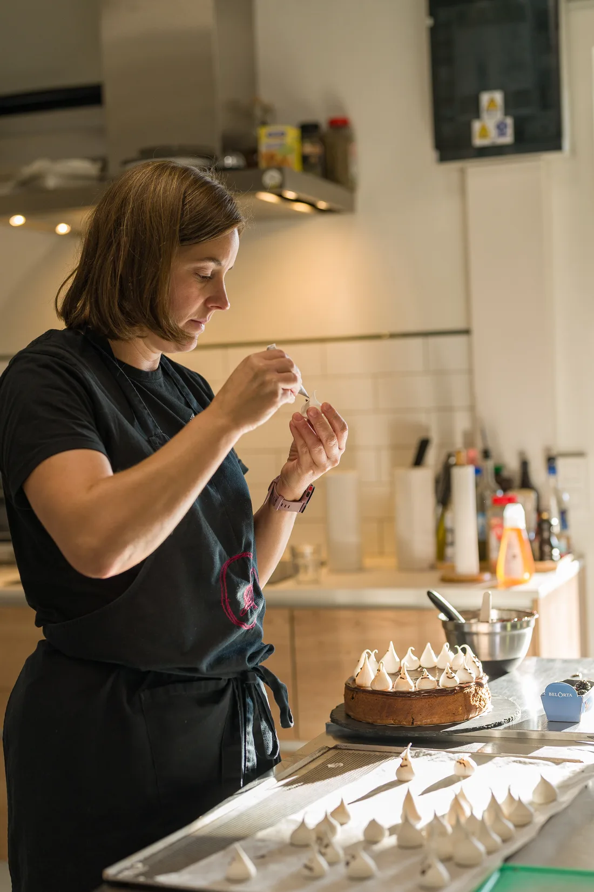
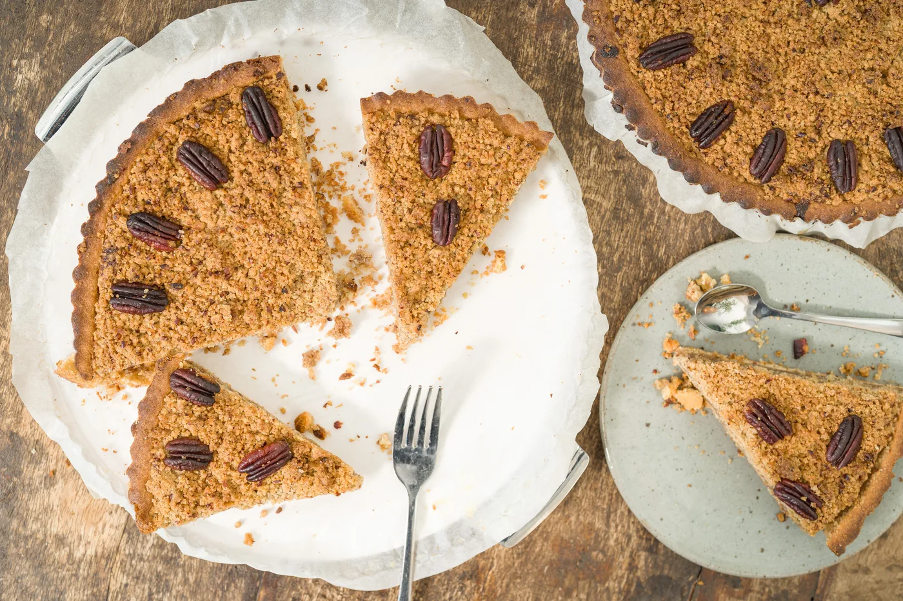
We werken met kwalitatieve producten, heerlijke biokazen en zoveel mogelijk uit de streek. Het aanbod gaat mee met de seizoenen.

Ontbijten en brunchen kan bij ons elke dag. Liever een uitgebreide formule of à la carte? Alles kan, en kinderen zijn meer dan welkom.
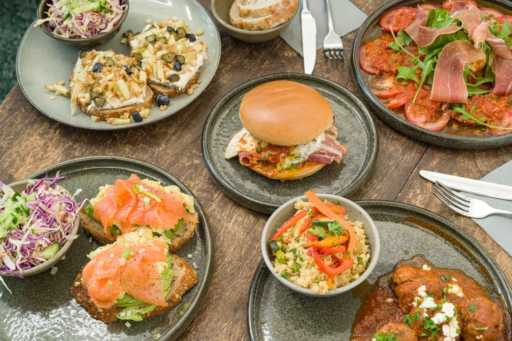
Smaakvolle boterhammen, burgers met een twist, planchas en altijd een suggestie van het seizoen.
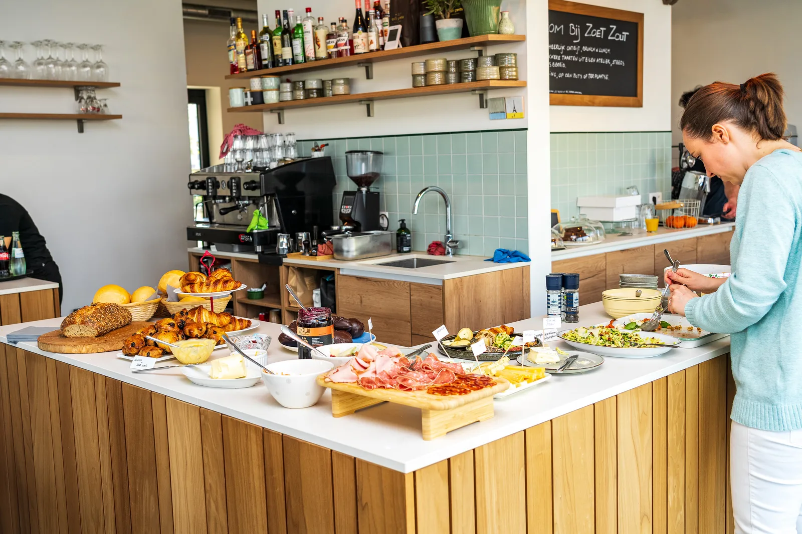
Elke tweede zondag van de maand. Biokazen, artisanale charcuterie, gerookte zalm, een warm gerecht uit de keuken en als afsluiter een stuk taart.
Per persoon · kleine kinderen € 14 tot € 20 · reserveren aangeradenHartige hapjes, taart, scones, smaakwater en thee à volonté.
Per persoon · vanaf 2 personen · op reservatie vanaf 14 uur, niet op zondag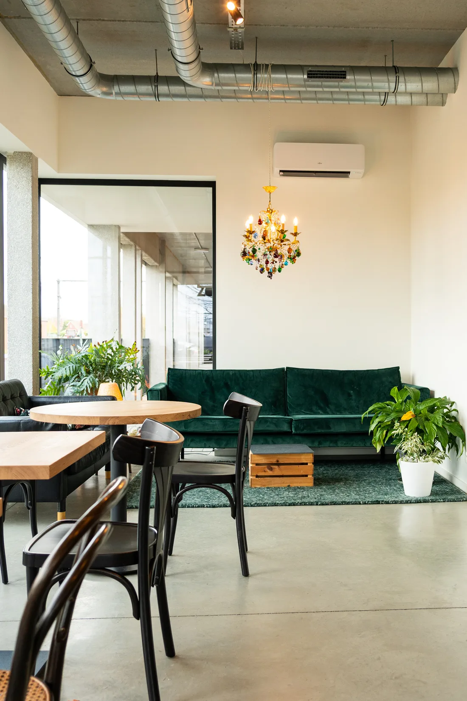
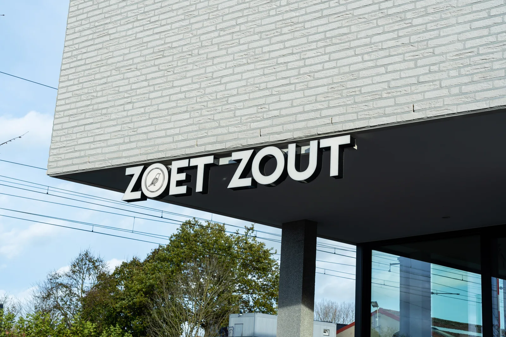
Laura bakte al als kind het liefst van al. Bas houdt van de natuur, van eerlijk eten en van mensen blij maken. Allebei lieten ze een vaste job achter zich om er samen voor te gaan.
Na hun bakatelier de Lucas in Gent en hun tuin Jardin Secret openden ze in oktober 2022 Zoet Zout, in de Zwalmstreek waar ze ook wonen.
We hebben heel lekker gebruncht. In een mooie kader met een vriendelijke en enthousiaste bediening. Komen zeker terug.
KRIS VAS C.
Bij toeval ontdekt maar een topplekje om heerlijk te lunchen of te ontbijten aan betaalbare prijzen. De toast geitenkaas was heerlijk, fris en vers. Ook het stuk kaastaart met speculoos nadien was een voltreffer. Volgende keer we in de buurt zijn, komen we zeker terug!
JORDI VAN P.
Alles was uiteindelijk super lekker en vers. Van de sapjes tot de lokale charcuterie tot de super lekkere pancakes. Buikjes vol, leuke middag gehad en weer een vast adresje op ons ‘geschikt voor kindjes’-lijst. Joepieeeeee!
LINE V.
Voor ontbijt, brunch en lunch reserveer je best, dan ben je zeker van een plaatsje. In de namiddag werken we zonder reservatie.
Ik maakte deze demo voor jullie om te tonen wat er kan. Na een kort gesprek maak ik er iets veel persoonlijkers van, helemaal naar jullie wens.
Vrijblijvend. Ik kom langs of we bellen.
Op maat, op jullie eigen domein.
Geen voorschot. Jullie betalen pas als alles klaar is.
Hosting, domeinnaam en kleine wijzigingen, zoals nieuwe openingsuren.
Omdat een voorbeeld meer zegt dan een mail. Zo zien jullie meteen wat er kan, en het kost jullie niets.
Nee. Het gesprek is vrijblijvend. Vinden jullie het niks, dan is het daarmee gedaan.
Na ons gesprek staat jullie site binnen 10 tot 14 dagen online.
Zeker. Jullie domeinnaam kan gewoon blijven, de nieuwe site komt in de plaats van de oude.
Nee, dat doe ik op basis van ons gesprek. Eigen foto's zijn mooi meegenomen, maar niet nodig om te starten.